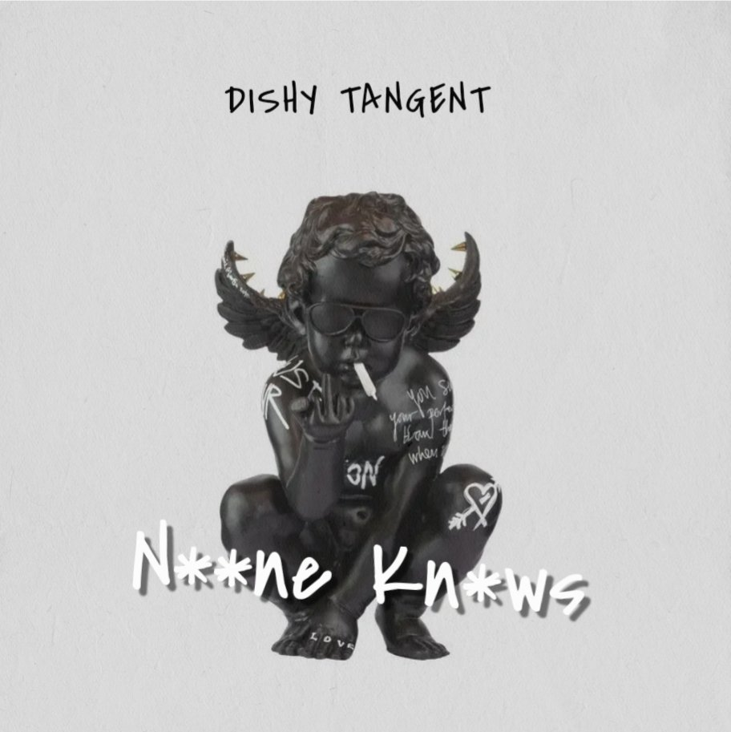

Muscle Memory Musik Studio
Muscle Memory Musik is an independent recording studio founded in 2005. Built and rebuilt over time, the studio has evolved through collaboration and hands-on creative work.
More than a recording space, the studio functions as a development hub — supporting artists, producers, and collectives at different stages of their journey.
Studio History
Muscle Memory Musik Studio is founded. Built from the ground up, prioritising creative freedom and artist growth.
Producers and engineers Young Max and Del aka Sonic were pivotal in early collaborations, forming the initial trio of producers and engineers alongside Louis aka Reason.
Dishy Tangent is formed by Reason and Matt Shilk.
Sing Out Loud Sundays is founded by RM Moses. Muscle Memory Musik Studio becomes the HQ for rehearsals, filmed sessions, and artist development.
Collaborations expand including Swayla and contemporary electronic music.
Muscle Memory Musik Studio becomes the official home of the UK’s GZONE Rap Battle. Curator GingaJay brings the platform to the studio, hosting lyricists and performers.
Ladder Records emerges as a collective — formalising years of collaboration and shared creative values.
Selected Works
A curated selection of releases shaped by the Muscle Memory Musik environment.


